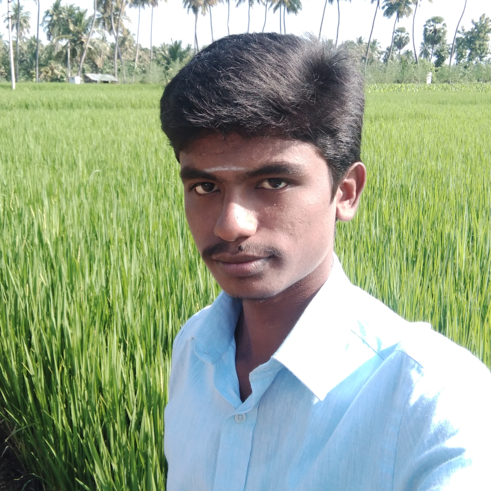

ARULMURUGAN P
arulmuruganp19it@kongu.edu
To work for a company to improve the company's growth with my good knowledge
NAME : ARULMURUGAN
DATE OF BIRTH : 23-SEP-2001
FATHER NAME : PALANISANY
MOTHER NAME : MALLIHA DEVI
LANGUAGE KNOWN: TAMIL,ENGLISH
ADDRESS : 57,CHETTIYAR KADU,
NAMMAGOUNDANPALAYAM,
VAZHAITHOTTAM(po),
SIVAGIRI,
ERODE-638109